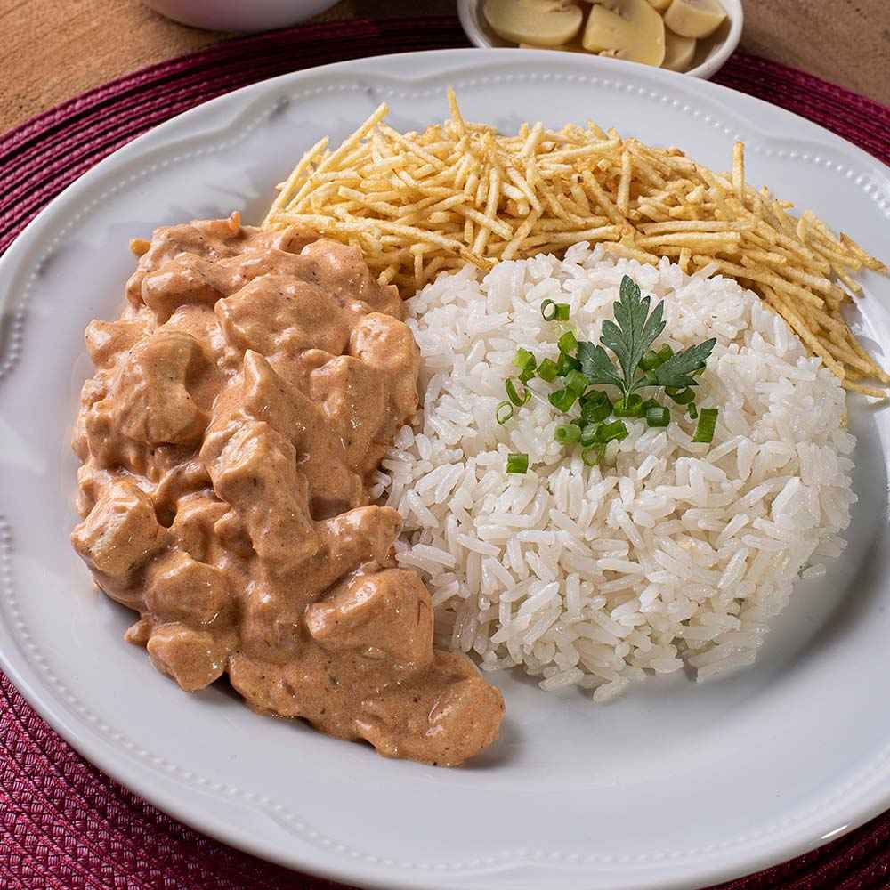

Receita | Strogonoff de frango
Ingredientes
- 3 peitos de frango (cortados em cubos)
- 1 cebola picada
- 1 colher de sopa de manteiga
- 1 copo de creme de leite
- 1/3 copo de mostarda
- 1/2 copo de ketchup
- 3 dentes de alho picados
- sal e pimenta do reino a gosto
Modo de preparo
- Em uma panela, misture o frango, o alho, e os temperos de sua preferência.
- Em uma frigideira, derreta a manteiga e doure a cebola.
- Misture o frango temperado e mexa até que esteja dourado.
- Adicione o ketchup e a mostarda.
- Incorpore o creme de leite e retire do fogo antes de ferver.
- Sirva com arroz branco e batata palha.
